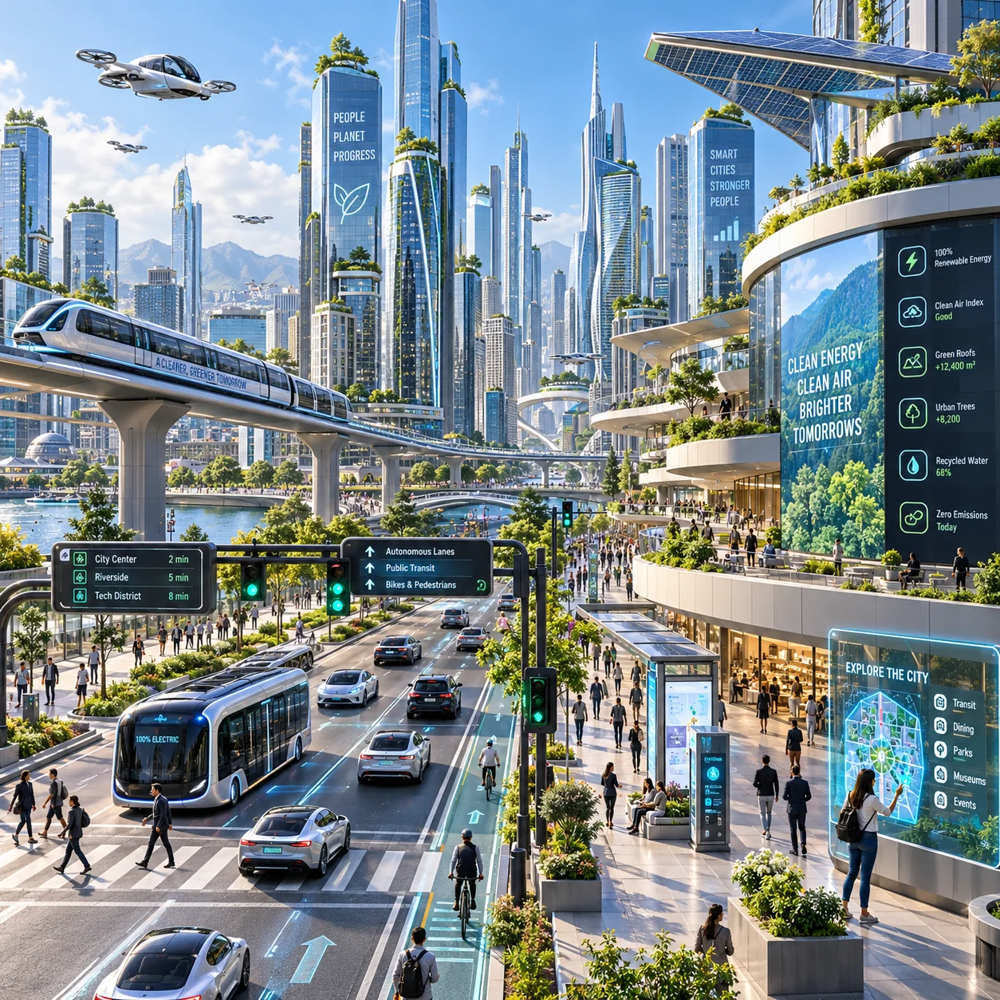
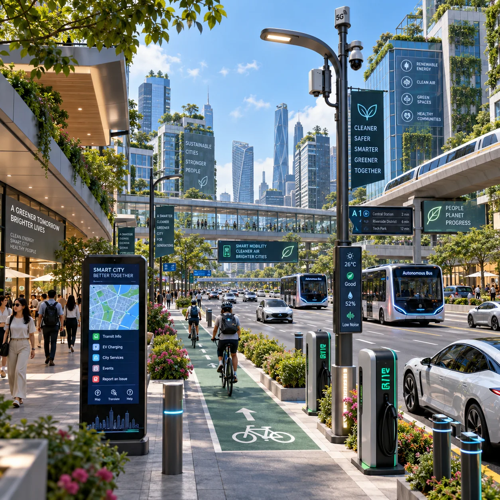
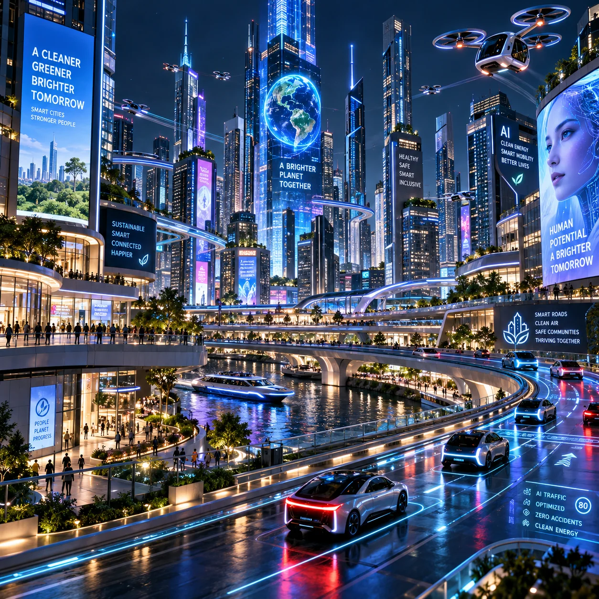

01 · SMART MOBILITY
🚦 Traffic & Vehicle Security
Traffic sensors and cameras can detect congestion and help adjust signal timing. Automatic number-plate recognition can support vehicle checks when connected to authorised systems.
Discover how artificial intelligence can help create cleaner, greener, safer and smarter cities for everyone.
Explore the Project →India's Smart Cities Mission was launched in 2015 to improve urban services and quality of life. Cities use technology, planning and citizen participation to improve transport, cleanliness, safety and sustainability.
Artificial Intelligence (AI) helps computers find patterns in information collected from sensors, cameras and other systems. It can help city officials make quicker, better-informed decisions.
Helping present our Grade 6 Social Science project on how Artificial Intelligence can make India's cities cleaner, greener, safer and smarter.
🎓 Grade 6 · Social ScienceFour smart-city ideas show how technology and responsible planning can make everyday life better.

Traffic sensors and cameras can detect congestion and help adjust signal timing. Automatic number-plate recognition can support vehicle checks when connected to authorised systems.
Fill-level sensors in smart bins can notify collection teams when bins need emptying. Better route planning can reduce unnecessary trips and help keep streets clean.

Smart streetlights can brighten or dim based on movement and lighting conditions, helping save electricity while keeping public spaces visible and safe.

City control rooms can bring together traffic alerts, emergency information and camera feeds to help trained officials respond to incidents. Privacy and human oversight are important.
ICCC stands for Integrated Command and Control Centre. It is a central place where city officials can view information from different services and coordinate responses.
AI can help analyse the information, but people remain responsible for important decisions.
Tap any question to see a simple explanation.
A smart city uses good planning and modern technology to improve services such as roads, water, cleanliness, energy and safety.
AI is technology that helps computers learn patterns from information and perform tasks such as recognising objects or predicting traffic conditions.
The Government of India launched the Smart Cities Mission on 25 June 2015.
Integrated Command and Control Centre. It helps city officials monitor and coordinate different public services.
AI can study traffic information from cameras and sensors and help adjust traffic-signal timings or alert officials about congestion.
Some smart bins use sensors to measure how full they are and send an alert when collection is needed.
They can dim when an area is quiet and brighten when people or vehicles are detected, depending on the system.
It can help trained teams notice incidents and respond faster. Safety systems should also protect people's privacy and follow the law.
No. Each city chooses projects based on local needs, funding and infrastructure.
They aim to make urban life cleaner, safer, more convenient and environmentally friendly for everyone.